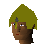
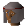
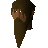
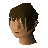

Desert Mining Camp (underground)
Underground area at 3291, 9422 · Kingdom Of Misthalin, Underground
Open on the world map → Open in knowledge graph → Surface: Desert Mining Camp
NPCs
| NPC | Level | Spawns | Notable drops |
|---|---|---|---|
 Mercenary | 45 | 4 | |
| 45 | 2 | ||
 Rowdy Guard | 43 | 6 | |
 Rowdy slave | 10 | 2 | |
| 1 | |||
 Female slave | 18 | ||
| 25 |